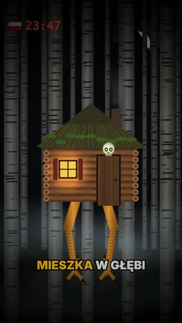
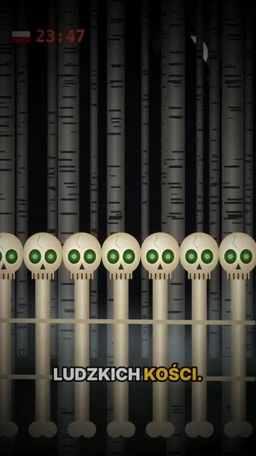
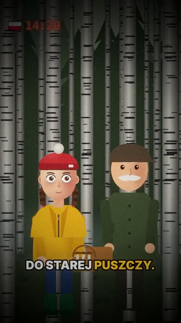
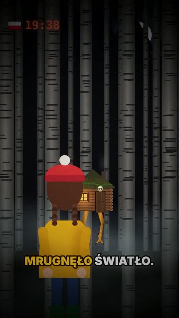
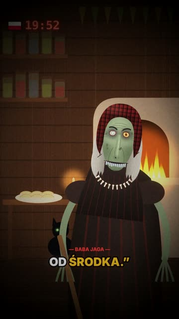
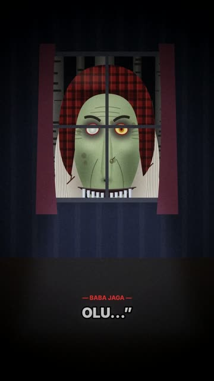

Jak robimy animowane historie grozy na TikToka: od haka w pierwszej sekundzie do gotowego filmu 1080×1920 z lektorem i dźwiękiem grozy.






Wersja 1.0 · 2026 · Wszystkie kadry pochodzą z naszych filmów.
Potrzebujesz własnego konta ElevenLabs (lektor) i Claude z Claude Code. Nie są w cenie.
Najlepiej działają historie, o których widz pomyśli: „to mogło być u mnie”. Pukanie w nocy, telefon od obcego, auto, które gaśnie w lesie. Na tym zbudowaliśmy wszystkie serie, a nasz rekord, odcinek „Kto tam?” z serii BLOK 94, przekroczył 750 tysięcy wyświetleń.
Scenariusz piszemy od razu jako listę scen z czasem i jedną kwestią lektora na scenę. Jedna scena to 2,4–3,6 sekundy, czyli 6–12 słów. Cały film ma 110–150 sekund.
Szablon do wypełnienia znajdziesz w pliku szablon-scenariusza.md w paczce.
Lektor prowadzi całą historię. Używamy ElevenLabs (model v3), bo rozumie znaczniki emocji w nawiasach, np. [storytelling, tense, slow], [whispering], [sweet, old woman, creepy].
lektor: highpass=f=70,acompressor=threshold=-20dB:ratio=2.5,aecho=0.5:0.3:35:0.08 stwór: asetrate=48000*0.84,aresample=48000,atempo=1.12,aecho=0.7:0.6:50|110:0.35|0.2
Oś czasu powstaje z długości nagrań. Każda scena ma czas początku i końca, a skrypt narr.py po nagraniu dopasowuje sceny do mowy: wydłuża je, jeśli kwestia jest dłuższa, i skraca puste pauzy.
Stawiamy na czystą animację 2D z miękkim cieniowaniem. Postać ma być rozpoznawalna po sylwetce w ułamku sekundy.
Zbliżenia twarzy w kluczowych momentach robią więcej niż szczegółowe tła.
Każda scena ma rozpoznawalne miejsce i jedno źródło ciepłego światła w zimnej nocy.
Dźwięk robi połowę strachu. Nasz standard warstw:
W paczce dostajesz pięć naszych dźwięków wygenerowanych od zera: tension, hit_low, riser, sting i jolt. Możesz ich używać w swoich filmach.
Format: 1080×1920, 30 fps, H.264 (yuv420p) Jakość: CRF 17 albo ok. 5 Mb/s (plik poniżej 100 MB) Dźwięk: AAC 256 kb/s, 48 kHz, loudnorm I=-14 TP=-1.5 Długość: 110–150 s (dłuższe filmy trzymają widza dłużej)
Renderujemy klatka po klatce w przeglądarce bez okna (canvas + Playwright) na 4 równoległych stronach, a potem składamy obraz z dźwiękiem w ffmpeg.
| # | Scena | Czas | Kto mówi | Tekst |
|---|---|---|---|---|
| 1 | karta | 0.0–3.5 s | lektor | To jest Baba Jaga. |
| 2 | chatka | 3.5–8.5 s | lektor | Mieszka w głębi puszczy. W chatce na kurzej nóżce. |
| 3 | plot | 8.5–13.5 s | lektor | Płot ma z ludzkich kości. Na każdym palu czaszka. |
| 4 | zeby | 13.5–16.0 s | lektor | Ma żelazne zęby. |
| 5 | glodna | 16.0–18.3 s | lektor | I zawsze jest głodna. |
| 6 | dzieci | 18.3–25.4 s | lektor | Zaprasza dzieci do środka. Na ciepły posiłek. I nikt ich więcej nie widzi. |
| 7 | ola | 25.4–30.5 s | lektor | Ola pojechała z dziadkiem na grzyby. Do starej puszczy. |
| 8 | dziadek1 | 30.5–34.5 s | dziadek | Trzymaj się blisko, Olu. Puszcza lubi zabierać dzieci. |
| 9 | grzyby | 34.5–38.5 s | lektor | Ale Ola zobaczyła prawdziwki. Całą gromadę. |
| 10 | zniknal | 38.5–42.9 s | lektor | Gdy podniosła głowę… dziadka nie było. |
| 11 | woła | 42.9–45.9 s | ola | Dziadku?! Dziadku! |
| 12 | zmrok | 45.9–50.2 s | lektor | Zapadał zmrok. Mgła wpełzała między drzewa. |
| 13 | swiatlo | 50.2–53.0 s | lektor | Między drzewami mrugnęło światło. |
| 14 | nozka | 53.0–56.4 s | lektor | Chatka. Na ogromnej kurzej nóżce. |
| 15 | czaszki | 56.4–62.2 s | lektor | Płot z kości. A czaszki… odwróciły się w jej stronę. |
| 16 | drzwi | 62.2–64.4 s | lektor | Drzwi skrzypnęły. |
| 17 | zaprasza | 64.4–68.8 s | jaga | Zmarzłaś, dziecko? Wejdź. Mam ciepłe pierogi. |
| 18 | glodna_ola | 68.8–72.6 s | lektor | Pachniało pięknie. A Ola była taka głodna. |
| 19 | weszla | 72.6–74.6 s | lektor | Weszła. |
| 20 | sloje | 74.6–81.1 s | lektor | Na półkach stały słoje. W słojach coś pływało. I patrzyło. |
| 21 | piec | 81.1–84.2 s | lektor | Piec był rozpalony do czerwoności. |
| 22 | lopata | 84.2–88.7 s | jaga | Usiądź na łopacie, kochanie. Pokażę ci piec od środka. |
| 23 | zelazne | 88.7–93.6 s | lektor | Wtedy Ola zobaczyła jej zęby. Żelazne. |
| 24 | sprytna | 93.6–97.0 s | ola | A jak się siada, babciu? Pokaż mi. |
| 25 | pochyla | 97.0–100.0 s | lektor | Baba Jaga pochyliła się nad łopatą… |
| 26 | pcha | 100.0–104.2 s | lektor | Ola pchnęła łopatę z całej siły. I uciekła. |
| 27 | ucieka | 104.2–111.6 s | lektor | Biegła przez las. A za plecami słyszała tupot. Ogromny. Kurzy. |
| 28 | latarka | 111.6–114.9 s | lektor | Aż w ciemności zobaczyła latarkę dziadka. |
| 29 | dziadek2 | 114.9–117.2 s | dziadek | Olu! Gdzie ty byłaś?! |
| 30 | noc | 117.2–120.2 s | lektor | W domu Ola długo nie mogła zasnąć. |
| 31 | skrob | 120.2–123.2 s | lektor | Nad ranem coś zaskrobało w okno. |
| 32 | slady | 123.2–129.6 s | lektor | Pod oknem, w błocie, były ślady. Ogromne. Trójpalczaste. |
| 33 | pierogi | 129.6–133.0 s | jaga | Pierogi stygną, Olu… |
| 34 | wyskok | 133.0–134.7 s | — | — (sam obraz i dźwięk) |
| 35 | epilog | 134.7–145.0 s | lektor | Baba Jaga to postać ze słowiańskich wierzeń. A jeśli zgubisz się w lesie naprawdę: zostań w miejscu i dzwoń pod sto dwanaście. |
| 36 | end | 145.0–148.5 s | jaga | Ola… pierogi… |
Tak prosimy Claude Code o kolejne etapy. Wklej, zmieniając nazwy na swoje.
1. Napisz scenariusz legendy o [STWÓR] według kręgosłupa z rozdziału 2: 34–38 scen po 2,4–3,6 s, jedna kwestia lektora na scenę, znaczniki emocji ElevenLabs v3, zakończenie ze zwrotem w ostatnich 10 s.
2. W katalogu film/[NAZWA] przygotuj scenes.js i config.py na wzór film/leg7. Najpierw postać [STWÓR] w zbliżeniu (funkcja jak jagaFace) i pokaż mi kadr testowy.
3. Zrób podgląd bez lektora (PREVIEW_NO_VOICE = True), wyrenderuj i pokaż arkusz kadrów co 3 s. Sprawdź ciągłość miejsca, czy napisy nie zasłaniają twarzy i zgodność tekstu z obrazem.
4. Nagraj lektora (PREVIEW_NO_VOICE = False), zbuduj film, nałóż korekcję kolorów w RGB i zrób miniaturkę z twarzą stwora oraz opis z hasztagami.
Zastrzeżenie: poradnik uczy tworzenia filmów. Nie gwarantuje wyświetleń, obserwujących ani zarobków. Wyniki zależą od Twojej pracy, treści i zasad platform. Nie jesteśmy powiązani z TikTokiem, ElevenLabs ani Anthropic.